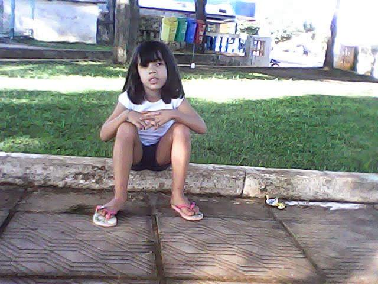

Nascida do ano 2007 dia 13 no mês de julho acredito que todos nós nos temos um propósito na vida e o meu começo esse dia.
Sim eu era desse jeito . Sempre fui uma criança muito comunicativa e muito sincera e extrovertida sempre tive facilidade em fazer amizades. Com 2 anos fiz cirurgia das amígdalas e também quebrei um braço mais tirando isso cresci uma criança muito forte.
Eu amava ir na praça brincar cresci sozinha pois minha irmã já era adolescente e eu criança e meus primos da minha idade morava longe mais brincar sozinha nunca foi um problema pra mim.
Minha mãe sempre foi muito presente e meu pai também mais sempre fui mais próxima dela ela me fez ser a mulher que sou hoje e tenho muito orgulho de ter um mãe tão maravilhosa como ela
Essa é minha base sem eles não seria quem sou hoje. Tenho muito agradecer a todos e primeiramente a Deus por ter eles na minha vida